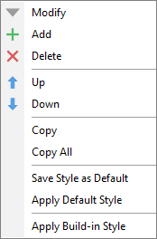
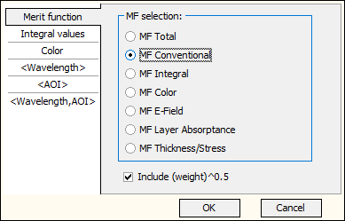
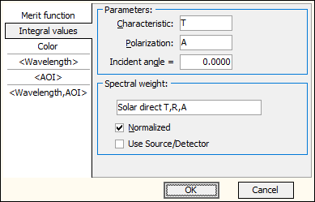
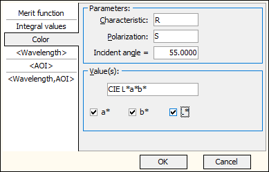
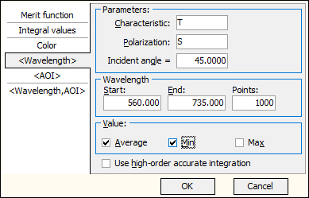
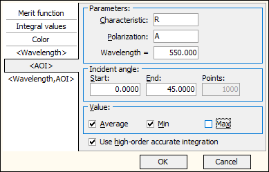

Integral values and characteristics
Integral values and characteristics
Navigation: OptiLayer Menu Commands > Analysis Menu >
Integral values and characteristics
` <additionalevaluationwindows.html>`__ ` <idh_menu_analysis.html>`__ ` <idh_digitize.html>`__
The Integral Values and Characteristics command opens the Integrals, Values window, which allows users to evaluate and monitor the following values during the design process:
Merit Function value and its components.
Integral values for spectral distributions defined in the current Integral Target or predefined spectral distributions.
Various Color characteristics of the current coating.
Averaged values over a range of wavelengths.
Averaged values over a range of angles of incidence.
Averaged values over a 2D region of wavelengths x angles of incidence.

To add a new value for display, press the [+] button, and to remove a selected value, press the [x] button at the top of the Integrals, Values window.
You can adjust the font type, size, font color, and background color using the corresponding toolbar controls. It is also possible to change the number of digits displayed and select the scientific format when necessary (use the [E±] button for this purpose). Items in the Integrals, Values window can be moved up and down using the arrows. All settings are persistent and are stored in the OptiLayer configuration files. Alternatively, it is possible to use the right-click menu of this window.

Copy command of the right-click menu copies the current value to the clipboard, while Copy All allows copying the content of the whole Integrals, Values window. Save Style as Default command allows saving the currently configured settings as default for further use in this or other Problem Directories. Apply Default Style command allows reverting the current display style to the previously saved default settings. Apply Built-in Style command allows reverting the current display style to built-in settings. Configuration of any displayed values is possible with the help of the down-arrow button next to the Name field. The same dialog is invoked after selecting the Add command. The configuration sub-dialog has six tabs that allow the selection and configuration of each of the six available classes of values.
Merit Function value and its components
Selection of the Merit Function value and its components is performed with the first tab of the configuration dialog.

Using this option, it is possible to monitor the contribution of each type of merit function to the total MF value.
Remember, that:
(MFTotal)2 = w1 (MFConventional)2 + w2 (MFIntegral)2 + w3 (MFColor)2 + w4 (MFEFi)2 + w5 (MFLA)2 + w6 (MFstress)2
Note: The “Integral values and characteristics” window displays partial MF (Merit Function) values multiplied by the square root of the respective weight or the pure MF value, depending on the selection made at the bottom of this window. For example, if “MFIntegral” is chosen for display, then the respective “Value” field of the “Integral values and characteristics” option shows (w2)0.5 * MFIntegral or MFIntegral in accordance with this selection. It is possible to exclude the weight factor by unchecking the Include (weight)^0.5 check box.
Integral values

Use the “Integral Values” option to display any of the integrals defined in the currently loaded Integral Target. It is possible to independently specify the “Characteristic,” “Polarization” of interest, and “Incident Angle.” The “Spectral Weight List” includes currently defined spectral weights and some predefined spectral weights from the Catalog.
The “Normalized” checkbox allows you to specify the normalization procedure independently for each of the displayed integral values. The “Use Source/Detector” checkbox controls whether the currently loaded source and detector are used additionally during the computations of this integral value.
Color characteristics

Use the “Color Characteristics” option to display any of the color characteristics available in the Color Evaluation window. “Characteristic,” “Polarization,” and “Incident Angle” can be specified independently.
Averaged values over a range of wavelengths

In the <Wavelength> tab, it is possible to display the average value, minimum value, and maximum value of a selected characteristic with specified polarization and incident angle over a range of wavelengths. The wavelength range is specified by the Start and End values, with a corresponding number of integration points. Optionally, it is possible to activate a high-precision integration algorithm by checking the “Use high-order accurate integration” box.
Averaged values over a range of incident angles

In the <AOI> tab, it is possible to display the average value, minimum value, and maximum value of a selected characteristic with specified polarization and wavelength over a range of incident angles. The range of incident angles is specified by the Start and End values, along with a corresponding number of integration points. Optionally, you can activate a high-precision integration algorithm by selecting the “Use high-order accurate integration” checkbox.
Averaged values over a 2D region
In the <Wavelength, AOI> tab, it is possible to display the average value, minimum, and maximum values of a selected characteristic with a specified polarization, over a range of wavelengths and incident angles. These ranges are specified by the Start and End values, along with a corresponding number of integration points for each dimension. Since computing 2D average values is more time-consuming, it is recommended to select a moderate number of points for each dimension.